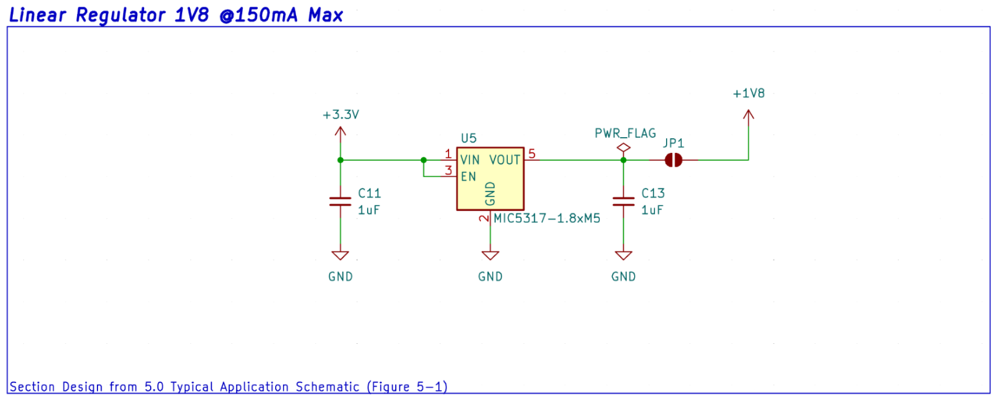
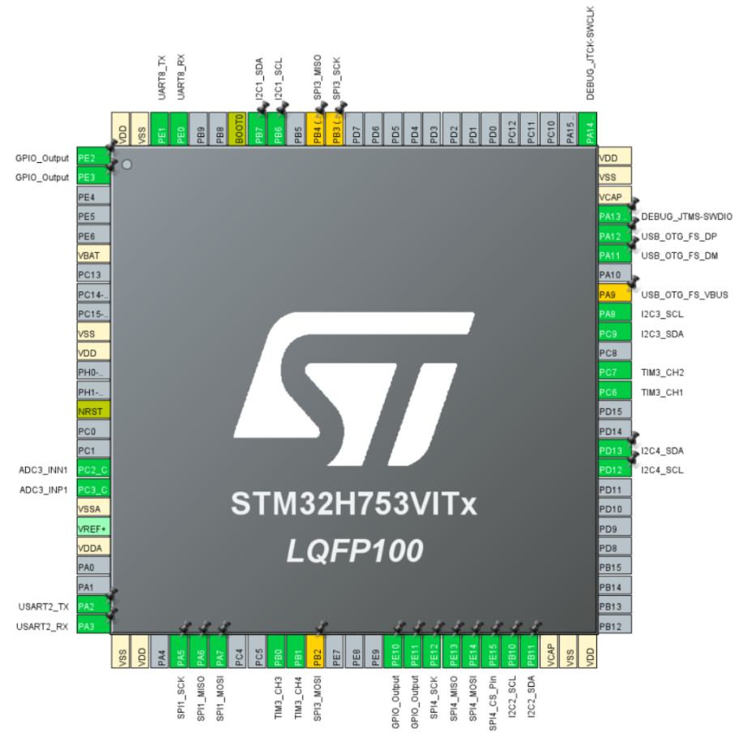
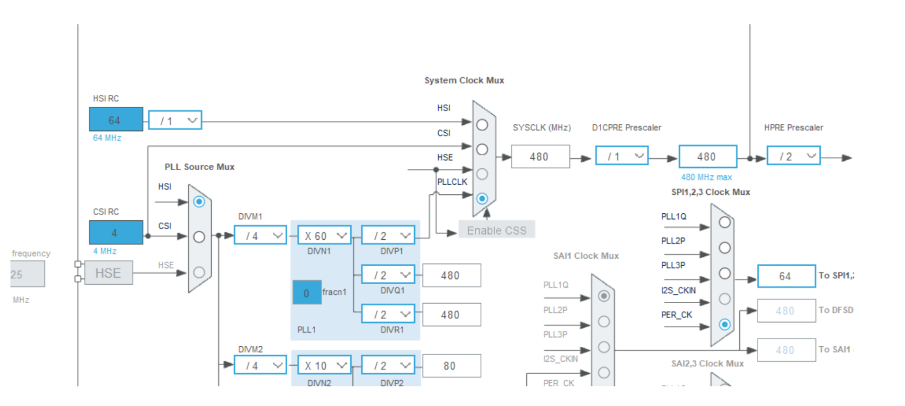
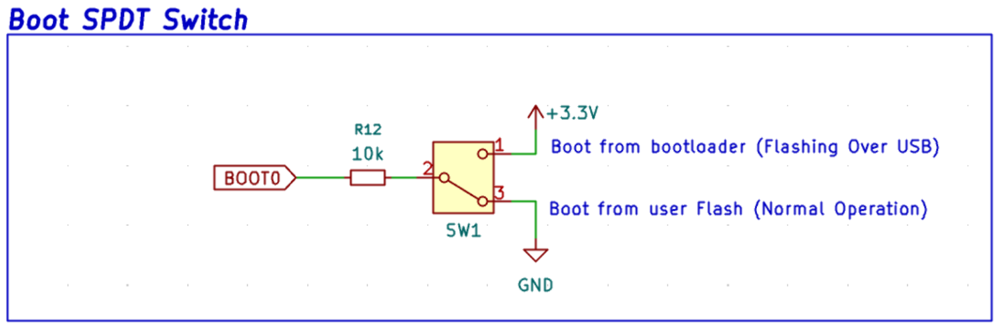
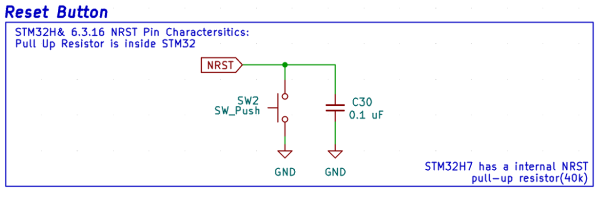
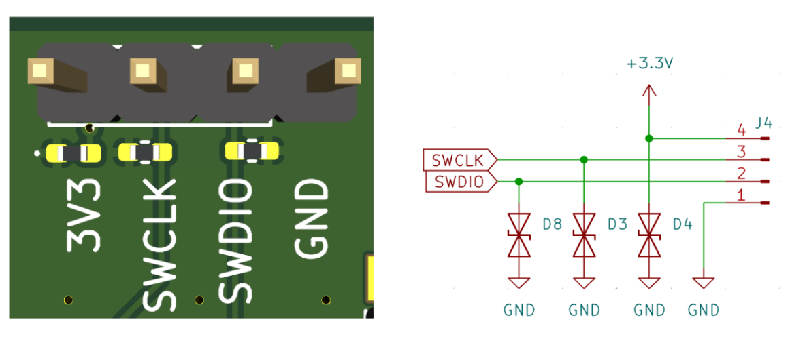
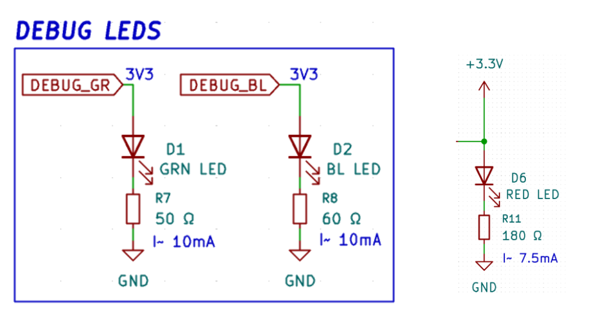

Flight Controller Design Justification
High Level Overview
Description of Project
The OSCAR quadcopter is a senior design project developing a custom flight stack from the board
level up. This document covers the flight controller (FC), one of three custom PCBs in the stack
alongside the Electronic Speed Controller (ESC) and the GNSS/Receiver board. The FC is a 4-layer
board built around the STM32H753VIT6 microcontroller, sized to mount on a 5" frame with a 50×50 mm M2 hole
pattern.
The FC's role is to close the inner attitude control loop: read the IMU and barometer, fuse them with off-board GNSS and magnetometer data, run the PID loop, and drive four DSHOT motor outputs to the ESC. It also exposes a USB-C interface for configuration and logging, an SWD port for development, and a UART to the ExpressLRS receiver.
The hardware is designed to support two firmware paths. The first is Betaflight as the baseline target, which gets the craft flying with a known good codebase. The second is a custom firmware target intended for research workloads (custom estimators, observers, outer-loop control) layered on top of the inner loop. The H7 was selected specifically to leave headroom for the second path without having to redesign the board.
Scope
This document is a block-by-block design justification for Rev 1.0 of the FC PCB. Each subsystem is presented with its part selection rationale, key datasheet parameters, the calculations or design references used to set component values, and the resulting margin against the application requirement.
In scope:
- Power tree (input protection, source OR-ing,
3.3 Vbuck,1.8 VLDO) - MCU subsystem (part selection, clocks, boot/reset, SWD, indicator LEDs)
- Communication and I/O (USB
2.0FS, DSHOT outputs) - On-board sensors (primary IMU, barometer, EEPROM, secondary IMU placeholder)
Out of scope and covered in companion documents: the ESC board, the GNSS/Receiver
board (including the L1 patch antenna and TESEO-LIV3R front end), frame
mechanical design, and
firmware implementation. Off-board sensor selection (magnetometer, GNSS) is summarized in Section
4.4.5 for context but justified in the GNSS Design Justification document.
Block Diagram
The figure below shows the FC's functional groupings and the interfaces it presents to the rest of the OSCAR stack.

Power enters from one of two sources. USB-C delivers 5 V during
bench
work and configuration; the ESC delivers 8.8 V regulated (derived
from a 3S-4S LiPo running 11.1-14.8 V
nominal)
during flight. Both feed a dual Schottky diode array that selects whichever rail is higher and
blocks reverse current into the inactive source. The OR'd output drives the 3.3 V switching
regulator, which supplies the MCU's VDDIO through bulk decoupling and VDDA through a separate analog
filter network. A 1.8 V LDO branches off the 3.3 V
rail to supply the ENS220 barometer.
The STM32H753 sits at the center. On-board sensors connect locally: the ICM-40609-D IMU over SPI, and the barometer and magnetometer over I2C. USB D+/D− routes from the USB-C connector through a USBLC6-2 ESD array to the H7's OTG_FS peripheral. Four DSHOT lines run to the ESC, which in turn drives the four motors. An SWD header exposes SWDIO/SWCLK for the ST-Link programmer.
Two RF paths terminate off-board and are shown for context only. The 1.575 GHz
GPS L1 signal
reaches the TESEO-LIV3R through a patch antenna on the GNSS daughter board, which returns position
to the H7 over UART. The 2.4 GHz ExpressLRS link terminates on the
receiver module and returns
control inputs to the H7 over a second UART.
System Constraints
This section sets the fixed boundaries the design has to fit inside: physical geometry, input power range, layer stackup, and what JLCPCB can actually fabricate. Every part choice in Section 4 is constrained by one or more of these.
Size
The FC mounts to a 5" quadcopter frame using the standard 50×50 mm M2 hole pattern. The outer board envelope is 56×56 mm, set by the frame's mid-plate cutout and the need
to clear the four arm bolts. This footprint is the binding constraint on the MCU package (LQFP100
at 14×14 mm fits; larger BGA parts do not leave room for the
sensor cluster and
connectors), on connector placement, and on routing density. All passives use 0603 to keep hand-rework feasible during bring-up; the ESD601 TVS diodes
are the single 0402 exception, which
are optional if ESD events are not a concern.
Power Input
The FC accepts two power sources that may be present simultaneously. Each source feeds the diode-OR network described in Section 4.1.2; the higher rail wins and the other is reverse-biased.
Dual Source support. USB-C provides 5 V at up to
1.5 A during bench work, configuration, and firmware flashing. The
ESC-derived rail provides 8.8 V (regulated down from a 3S-4S LiPo running 11.1-14.8 V nominal)
during flight. The 3.3 V buck (AP63203) accepts 3.8 V to 32 V, so the headroom above the highest expected ESC
rail is
sufficient.
Board Stackup (4-layer)
The board is designed in KiCad and fabricated by JLCPCB. The 4-layer stackup is:
| Layer | Type | Material | Thickness | εr |
|---|---|---|---|---|
| F.Cu | Copper (1 oz) | — | 0.035 mm |
— |
| Dielectric 1 | Prepreg 7628 | — | 0.2104 mm |
4.4 |
| In1.Cu | Copper (0.5 oz) | — | 0.0152 mm |
— |
| Dielectric 2 | Core FR-4 | — | 1.065 mm |
4.6 |
| In2.Cu | Copper (0.5 oz) | — | 0.0152 mm |
— |
| Dielectric 3 | Prepreg 7628 | — | 0.2104 mm |
4.4 |
| B.Cu | Copper (1 oz) | — | 0.035 mm |
— |
Total board thickness is 1.606 mm, within tolerance of the 1.6 mm JLCPCB option. Layer
net assignments are:
| Layer | Purpose |
|---|---|
| F.Cu | Signal + GND pour |
| In1.Cu | GND (solid) |
| In2.Cu | 3.3 V |
| B.Cu | Signal + GND pour |
Three of the four layers carry ground. F.Cu and B.Cu are flooded with ground pour because most subcircuits reference ground locally. In1.Cu is solid ground for two reasons: it gives the USB differential pair on F.Cu a continuous reference 0.2104 mm directly below the trace (the dielectric height used in the CPWG geometry in Section 4.3.1), and sandwiching the 3.3 V plane (In2.Cu) between two ground references lowers loop inductance for the buck regulator and contains switching noise. In2.Cu carries 3.3 V because that rail powers the MCU, both IMUs, the EEPROM, magnetometer, and SWD header — a dedicated plane removes the need to route 3.3 V as a trace anywhere.
Manufacturing Capabilities (JLCPCB Constraints)
The design adheres to JLCPCB's standard multilayer capabilities as of April 2026. The binding constraints that show up in the layout are:
| Parameter | JLCPCB Capability |
|---|---|
| Min. trace width / spacing | 3.5 mil (0.09 mm) multilayer |
| Min. via hole / diameter | 0.2 mm / 0.45 mm (no upcharge) |
| Board thickness | 1.6 mm selected |
| Outer / inner copper weight | 1 oz / 0.5 oz |
| Min. annular ring | 0.13 mm |
| Min. drill-to-copper | 0.2 mm |
| Min. silkscreen width / height | 0.15 mm / 1 mm |
| Surface finish | HASL (with lead) |
| Impedance tolerance | ±10% (controlled impedance) |
The 1.6 mm board with 1 oz outer /
0.5 oz inner copper produces a dielectric height of 0.21 mm
between F.Cu and In1.Cu. This height feeds directly into the CPWG width calculation for the USB
pair in Section 4.3.1, where a 0.2286 mm trace width with 0.2 mm gap to ground gives the required 45 Ω
single-ended (90 Ω differential) impedance. The 0.2 mm via hole / 0.45 mm diameter is
the smallest size JLCPCB does not surcharge
for; it is also large enough to fit between adjacent pins on the LQFP100 fanout without violating
the 0.09 mm spacing rule.
IMPORTANT: In JLCPCB's Gerber viewer, always run the Design for Manufacturing check to validate your board is meeting specification before purchasing.
System Interfaces
This section defines the FC's contract with the rest of the OSCAR stack: the connectors it exposes, the signals on each pin, and the protocols spoken over them.
USB-C (data + power)
The USB-C port (J1) is the FC's bench interface for firmware flashing and configurator access. It is wired as a USB 2.0 Full Speed device on the H7's OTG_FS peripheral.
| Parameter | Value |
|---|---|
| Connector | USB-C 2.0 receptacle, 16 pin |
| Role | USB device |
| Speed | Full Speed, 12 Mbps |
| Power in | 5 V nominal, up to 1.5 A
from host |
| Data lines | D+/D− routed as 90 Ω differential pair |
| Cable | Any standard USB-C cable |
| Orientation | Reversible |
Enumeration behavior is set by the BOOT0 switch (Section 4.2.3): with BOOT0 high the H7 enumerates as a DFU device for firmware flashing; with BOOT0 low it boots user firmware and enumerates as whatever the firmware presents (CDC for Betaflight Configurator, MSC for blackbox access). VBUS is OR'd with the ESC rail internally so the board may be powered from USB alone for bench work.
ESC Interface (power input, DSHOT outputs, telemetry return)
The ESC interface is the in-flight power and control link between the FC and the OSCAR ESC board. It
carries the 8.8 V rail up to the FC and four DSHOT motor commands
plus one telemetry return
down to the ESC.
| Pin | Signal | Direction | Description |
|---|---|---|---|
1 |
8V8 | ESC → FC | 8.8 V power input from ESC, feeds diode-OR network |
2 |
NC | — | Reserved |
3 |
FC_RX | ESC → FC | ESC telemetry return (UART RX into FC) |
4 |
Motor 1 | FC → ESC | DSHOT command to motor 1 |
5 |
Motor 2 | FC → ESC | DSHOT command to motor 2 |
6 |
Motor 3 | FC → ESC | DSHOT command to motor 3 |
7 |
Motor 4 | FC → ESC | DSHOT command to motor 4 |
8 |
GND | — | Return reference |
| Parameter | Value |
|---|---|
| Power in | 8.8 V nominal from ESC BEC, up to 32 V tolerated by buck |
| Motor protocol | DSHOT300 (bidirectional capable) |
| Motor count | 4 (M1-M4) |
| Telemetry | One UART RX line, ESC side baud rate per ESC firmware |
| ESD protection | TVS array (D23-D28) on all signal lines |
Bidirectional DSHOT is supported by the hardware but enabled or disabled in firmware. The motor pinout (M1-M4 ordering) follows the Betaflight convention so the standard mixer mapping applies without remapping.
External Board Interfaces
The FC exposes four 4-pin headers for off-board connections. Each header follows the same pattern: power, ground, and two signal lines.
SWD Debug Header
| Pin | Signal | Description |
|---|---|---|
| 1 | GND | Return / Reference |
| 2 | SWDIO | Bidirectional data, to PA13 |
| 3 | SWCLK | Clock from debugger, to PA14 |
| 4 | 3V3 | Target reference voltage |
ST-Link compatible. 2.54 mm pitch.
Magnetometer I2C Breakout
| Pin | Signal | Description |
|---|---|---|
| 1 | GND | Return / Reference |
| 2 | MAG_SDA | I2C Data |
| 3 | MAG_SCL | I2C Clock |
| 4 | 3V3 | Supply to MMC5983MA |
400 kHz I2C, dedicated bus (not shared).
GNSS UART Breakout
| Pin | Signal | Description |
|---|---|---|
| 1 | GND | Return / Reference |
| 2 | GPS_TX | FC → GNSS, config into GNSS |
| 3 | GPS_RX | GNSS → FC, NMEA out of GNSS |
| 4 | 3V3 | Supply to TESEO-LIV3R |
9600 baud default, configurable to 115200. NMEA
0183.
ExpressLRS Receiver Header
| Pin | Signal | Description |
|---|---|---|
| 1 | GND | Return / Reference |
| 2 | ELRS_TX | FC → ELRS |
| 3 | ELRS_RX | ELRS → FC |
| 4 | 3V3 | Supply to ELRS receiver |
420 kbaud, CRSF protocol. Pinout follows the Betaflight Connector
Standard for ELRS Nano
receivers.
Power Test Header
| Pin | Signal | Description |
|---|---|---|
| 1 | GND | Return / Reference |
| 2 | 1V8 | From MIC5317 LDO output |
| 3 | 3V3 | From AP63203 buck output |
| 4 | 8V8 | From ESC rail |
Current available on each rail is bounded by the upstream regulator: 150 mA on 1V8, 2 A on 3V3, and 2 A on the ESC's 8V8.
Firmware Target (Betaflight & Custom Firmware)
Under construction — to be developed later in the semester.
The FC supports two firmware paths sharing the same hardware. Detailed target definitions, resource assignments, and build instructions will be added as bring-up progresses.
Path 1: Betaflight (baseline). A custom Betaflight target will be submitted
following manufacturer guidelines. Key target metadata includes: target name (TBD, format
OSCAR_FC_H753), MCU define STM32H743xx, sensor defines for the ICM-40609-D, ENS220 barometer
(driver TBD), and MMC5983MA magnetometer (driver TBD). The receiver will use
USE_SERIALRX_CRSF on the ELRS UART, with 4× DSHOT300 motor outputs on TIM1/TIM8 channels and an 8 kHz
PID loop with bidirectional DSHOT enabled.
The ENS220 barometer and MMC5983MA magnetometer are not in mainline Betaflight as of this revision. Driver work is required before the Betaflight path is functional.
Path 2: Custom research firmware. A bare-metal or HAL-based firmware built on STM32CubeIDE for downstream research work. Both paths flash over USB DFU (BOOT0 switch high) or over SWD.
Flashing. Both paths flash over USB DFU (BOOT0 switch high, see Section 4.2.3) or over SWD. A standalone How to Flash document will accompany the firmware release.
Connector Pinout Summary
Under construction — to be developed next semester.
Block by Block Verification
Power Tree
Input Protection & TVS Diodes
This section covers three distinct protection elements: general purpose TVS diodes on exposed external signal lines, the dedicated USB data-line ESD array, and the diode array network that isolates the dual power sources.
Key TVS Selection Parameters. A TVS diode is characterized by four parameters that together determine whether it will protect the downstream circuit without disturbing it:
- Reverse stand-off voltage (VRWM): Must exceed the highest steady-state signal voltage on the protected line.
- Breakdown / clamping voltage (VBR or VCL): The clamp voltage must stay below the protected device's absolute maximum input rating.
- Dynamic resistance (RDYN): Lower RDYN means the clamp voltage rises less under high surge currents.
- Line capacitance (CLine): On high-speed signals this directly degrades edge rates.
General Purpose TVS — TI ESD601
The TI ESD601 was selected for ESD protection on exposed external signal and power pins (UART
headers, SWD Debug, 3.3V, etc). The diode is bidirectional and sized as
a 0402 device with the 18V reverse stand off,
33V clamp at 2.77A, a dynamic resistance of
0.9Ω and a typical line capacitance of 0.3pF,
this is from figure 5.1 of electrical characteristics from ESD601. The
ESD601 carries IEC 61000-4-2 ratings of 15kV
contact and 15kV air discharge, which is well above the required
IEC
61000-4-2 approval of 8kV contact and 15kV air discharge.
USB Data-Line Protection — ST USBLC6-2
The USB D+ and D- lines are exposed externally though the USB-C connector, making them vulnerable to
ESD events before the signal reaches the MCU. The USBLC6-2SC6 is a dedicated USB ESD protection
array in an SOT-23-6 package, placed as close to the connector as possible on F.Cu. The part
contains two diode pairs, one for D+ and one for the D-, with a shared VBUS rail and a shared
ground. Any positive ESD transient on either dataline is clamped to VBUS any negative transient is
clamped to GND. The clamping voltage stays well below the STM32H7's GPIO absolute maximum of 4.0V
(STM32H753 datasheet, Section 6.3.1).
Key parameters from the USBLC6-2 datasheet (Table 2, Electrical Characteristics):
| Parameter | Value | Requirement |
|---|---|---|
| Reverse stand-off voltage | 5 V |
Matches VBUS (5 V USB) |
| Line capacitance (D+/D−) | 1.7 pF maximum |
Low enough for USB FS (12 Mbps) |
| IEC 61000-4-2 contact discharge | ±8 kV |
±8 kV |
| IEC 61000-4-2 air discharge | ±15 kV |
±15 kV |
Power Supply Source Isolation (USB vs. LiPo)
The board accepts power from two sources: USB-C (5 V nominal) and
the
ESC-derived rail (8.8 V nominal). Both can be present
simultaneously,
most commonly during bench testing when
USB is connected for debugging while the battery is also live for the motors. Without isolation, the
higher voltage source would force current backward into the lower one, potentially damaging the USB
host.
Each source feeds a forward-biased diode with both cathodes tied together at the regulator input.
The diode with the higher anode voltage conducts and supplies the load; the other is reverse-biased
and blocks. The OR'd node sits at the conducting source voltage minus one forward drop of
approximately 0.39 V.
Part Selection — ROHM RBE2EA20A. A dual Schottky in a SOT-25T package, with both
diodes brought out independently so a single part covers both sources. Schottky was chosen for its
lower forward drop (VF = 0.39 V) compared to
the 0.7 V drop of a
standard PN diode, which directly reduces continuous power dissipation.
| Parameter | Rating | Application |
|---|---|---|
| Reverse Voltage — VR | 20 V |
Blocks 12 V max ESC rail from the USB (met with margin)
|
| Steady Draw — IO | 2 A |
3.3 V regulator maximum output — met with margin |
| Surge Current — IFSM | 5 A |
Regulator inrush headroom |
Tradeoff acknowledgement. Diode-OR-ing continuously dissipates power proportional to forward voltage. Worst case at full load: Pdiode = 0.39 V × 2 A = 780 mW. In practice, measured board current during active firmware is roughly 200 mA, giving Pdiode ≈ 78 mW continuously. The alternative of a physical jumper separating each power supply was considered but is more tedious during testing.
Buck to 3.3 V
The board's primary rail is 3.3 V, supplying the MCU, both IMUs, EEPROM, magnetometer, GNSS, and SWD header. The Diodes Inc. AP63203 was selected to step down the OR'd input (nominally 4.6 V to 8.4 V after the Schottky drop) to a fixed 3.3 V output.
Why a switching regulator over an LDO. An LDO dropping the worst-case 8.4 V
to 3.3 V at 2 A output would
dissipate 10.2 W as heat — unacceptable on a 50×50 mm
board with no heatsinking. Even at a more realistic 300 mA load, an
LDO
would dissipate 1.53 W. The AP63203 at roughly 92%
efficiency dissipates approximately 86 mW for the same 300 mA
load, which is acceptable.

C10 (10 μF) is the input bulk cap, L1 (3.9 μH)
and C12 (100 nF, bootstrap) follow the datasheet recommended values,
and C14/C15 (2× 22 μF) form the output filter. JP2
isolates the buck
output from the 3.3 V rail during bring-up so the regulator can
be verified before any downstream load is connected.
| Parameter | Rating |
|---|---|
| Input Voltage Range — VIN | 3.8 V - 32 V |
| Output Current — IOUT | 2 A continuous |
| Switching frequency — fSW | 1.1 MHz |
| Fixed Output Voltage — VOUT | 3.3 V |
Component value verification. Component values were taken from AP63203 datasheet Table 2 (recommended selection for fixed 3.3V output). The calculations below verify they satisfy the design equations at the worst-case input voltage.
Looking at the worst case ripple is highest VIN.
Using VIN = 8.4V, VOUT = 3.3V, fSW = 1.1MHz, and recommend L = 3.9H.
\[\text{Inductor (Eq. 7):}\]
\[ \Delta I_L = \frac{V_{OUT}\left(V_{IN} - V_{OUT}\right)}{V_{IN}\cdot L\cdot f_{SW}} \]
\[ \Delta I_L = \frac{3.3\cdot\left((8.4)-(3.3)\right)} {(8.4)\cdot(3.9\,\mu H)\cdot(1.1\cdot10^6)} = 467\,mA \]
\[\text{Ripple Ratio:}\]
\[ \frac{\Delta I_L}{I_{OUT}} = \frac{515\,mA}{2\,A} = 23.4\% \]
The datasheet targets a ripple ratio between 30% and 50% for optimal inductor sizing. At 23.4% our inductor sits below the rated range which means the recommended inductor is slightly oversized relative to where the datasheet would place the optimum. Having a smaller δIL means that our peak current is less from equation 8, in addition that we will have a smaller ripple which is a benefit for this design.
The minimum output capacitance to hold a 100mV overshoot during a full
2A load step (AP63203 Eq.
10):
\[ C_{OUT} \;>\; \frac{L\cdot\left(I_{OUT} + \dfrac{\Delta I_L}{2}\right)^{2}} {\left(\Delta V + V_{OUT}\right)^{2} - V_{OUT}^{2}} \]
\[\text{Allowing a } \Delta V = 100\,mV \text{ overshoot at a full 2A load:}\]
\[ C_{OUT} \;>\; \frac{(3.9\,\mu H)\cdot\left(2 + \dfrac{0.515}{2}\right)^{2}} {(0.1 + 3.3)^{2} - 3.3^{2}} \]
\[ C_{OUT} \;>\; 29\,\mu F \]
The design places 2x 22uF X5R ceramic capacitors on the output for 44uF total, which is above the minimum. Additional decoupling capacitors
distributed along the 3.3V plane increase the effective
output capacitance further.
Output voltage ripple from ESR (AP63203 Eq. 9):
\[ V_{ripple} \;=\; \Delta I_L \cdot ESR \]
We have already calculated δIL from before in Eq. 7. However the capacitors I had
specified for our design did not mention the ESR. However we can estimate, based on utilizing a
ceramic capacitor rated at X5R, we can expect an ESR < 0.015 from here.
Making these assumptions, two in parallel of our worst case would assume 7.5mΩ.
\[ V_{ripple} \;=\; 0.467\,A \cdot 0.0075\,\Omega \;=\; 3.5\,mV \text{ ripple.} \]
This is approximately 0.1% of VOUT which is well inside the supply tolerance for the MCU and other peripherals. The ICM-40609-D is the most ripple-sensitive load on this rail and its datasheet allows up to 50 mV peak-to-peak on its supply, so the 3.5 mV figure clears that requirement by more than an order of magnitude even before accounting for the IMU's local decoupling.

The high-di/dt loop (input cap C1 to VIN to GND return) is kept tight on F.Cu with a single short return path to minimize loop area. The SW node copper (green) is held to the minimum area needed to carry inductor current, since any extra copper here radiates at fSW . The Output caps C1 and C2 return to the same GND pour as the input cap, finally the feedback trace (red dashed) is routed away from the SW node to keep switching noise out of the Feedback path.
Linear Regulator to 1.8 V
The ENS220 barometer requires a dedicated 1.8 V supply. The
Microchip
MIC5317-1.8YM5 (SOT23-5) is a fixed 1.8 V, 150 mA LDO with a 2.5 V to 6 V
input range
(MIC5317 datasheet, Section 1.0, Operating Ratings). Feeding 3.3 V from
the AP63203 directly into VIN is within spec. EN is tied to VIN, so the
regulator turns on whenever the 3.3 V rail is present; the 1.2V logic-high threshold (VEN row, Section 1.0,
Electrical Characteristics) is met by the 3.3V rail with margin.

Dropout check. Maximum dropout at 150 mA is 380 mV, so the minimum VIN needed is 1.8 V
+ 0.38 V = 2.18 V. The 3.3 V supply gives 1.12 V of headroom, so dropout is not a concern.
Capacitor selection. The MIC5317 requires a minimum 1 µF
ceramic input and 1 µF ceramic output capacitor for stability
(Section 4.1, 4.2). The board places 1 µF X7R on each,
meeting the requirement.
Thermal check. The ENS220 is the only load on this rail, consuming
75 μA typical. Using 100 μA as
a conservative bound:
\[ P_D \;=\; (3.3V - 1.8V)\cdot 0.0001 \;=\; 0.15\,mW \]
\[ T_J \;=\; T_A + P_D\cdot\theta_{JA} \;=\; 85^{\circ}C + (0.15\,mW)\cdot\left(253\,\frac{^{\circ}C}{W}\right) \;=\; 85.04^{\circ}C \]
Junction temperature is essentially equal to ambient at this load level, so thermal performance is not a binding constraint. Finally JP1 sits between the LDO output and the ENS220 supply pin. It is left open during initial bring-up so the 1.8V rail can be measured without risk to the barometer; once the rail is verified, the jumper is bridged with solder for normal operation.
MicroController Unit
The MCU is the central digital element of the flight controller, it takes in sensor data, closes the inner control loop, drives the motor outputs, and handles all communication with the host and external boards. Subsections 4.2.1 through 4.2.5 cover part selection, clock source, boot and reset, the SWD debug interface, and the indicator LED's.
MCU Selection Justification (STM32H753 vs. F4/F7/G4)
Flight controller MCU selection is constrained by three dominant pressures. First the control loop must close at a rate high enough that gyro samples do not age between iterations, the chip must expose enough timers, DMA streams, and serial peripherals to drive every motor and sensor without pin conflicts, and the firmware target should align with a maintained Betaflight build to keep the bring-up path open. The STM32H753VIT6 was selected because it satisfies all three,the board is intended to support both the baseline Betaflight target and downstream research workloads where a user adds custom estimators, observers, or outer-loop control above the inner loop without re-spinning the hardware.
Part Selection - STM32H753VIT6. Single core Cortex-M7 at 480MHz with a double precision FPU, 16kB cache, 2MB dual bank flash, 1 MB RAM, and an LQFP100 package. The 480MHz core delivers roughly 3 times the cycles per control period of the F4 at 168MHz, and roughly 2 times an F7 at 216MHz. Which is the headroom that lets the inner loop run at high rates while leaving the rest of the time budget for added user code. The double precision FPU specifically matters for research add ons; outer loop estimators that operate on accumulated stat are sensitive to single precision drift in ways an inner loop PIUD is not.
The DMA subsystem is the second decisive feature. The H7 routes any peripheral request to any DMA stream through DMAMUX1 and DMAMUX2 (STM32H753 reference manual, DMAMUX request line multiplexer chapter). On F4-class parts each peripheral is hard-wired to a specific stream, which is what forces the well-known Betaflight pin-conflict tables — selecting a UART for telemetry can lock out a timer channel needed for DSHOT on the same DMA controller. With DMAMUX, the four DSHOT outputs, the SPI buses to the two IMUs, the I²C bus to the barometer, and every UART coexist without that combinatorial constraint, and reassigning a function in firmware does not require re-spinning the board.
| Resource | H753VIT6 Capacity | Application Demand |
|---|---|---|
| Core clock | 480 MHz Cortex-M7 + DP FPU | Inner loop, filtering, headroom for user code |
| Flash | 2 MB | Betaflight, configuration, OSD, etc. |
| RAM | 1 MB | HAL-based drivers |
| Advanced timers | TIM1, TIM8 | Up to 8 DSHOT channels with complementary outputs |
| USART / UART | 4 USART + 4 UART | ESC telemetry, GPS, ELRS, debug |
| SPI | 6 | IMU selection |
| I2C | 4 | Barometer, magnetometer, EEPROM |
| USB | OTG FS and OTG HS | Device FS |
| DMA |
The peripheral count is deliberately oversized relative to the baseline four motor build. Spare UARTs and SPI/I2C buses are available in this design, keeping this a modular design for researchers.
Toolchain and firmware target. STM32CubeIDE and the STM32 HAL are standard development environment for the ST parts and are widely used in both industry and academia, having an available and free software to utilize for firmware is deliberate in this design. The 1MB RAM budget makes the HAL viable as the driver layer rather than forcing hand rolled register level code, which would otherwise be necessary on smaller flash parts to preserve room for application logic on top. The H7 is a supported “first class” target with active mainline support, so the bring up sequence is straight forward.
Tradeoff. The H753VIT6 is a 100 pin LQFP with 0.5mm pitch and draws meaningfully more current than the F4 at idle, the H7 can consume up to 200mA during operating while the F4 can consume in the 10-20mA range. In addition the H7 is 3 times more expensive than an MCU than the F4 as well as it takes up a larger surface area of the flight controller.

Clock Source
The MCU's system clock determines control loop timing, peripheral baud rate, and more. The STM32H753 supports four clock sources into its PLL tree: the 64 MHz internal HSI, the 4 MHz internal CSI, an external HSE crystal, and the 48 MHz internal HSI48 reserved for USB and RNG. The design uses HSI as the PLL input and leaves the HSE pins unpopulated. The OSC_IN and OSC_OUT footprints were removed from this revision rather than left as DNP — the crystal, load capacitors, and feedback resistor are not on the board.

Why HSI is sufficient. The two cases that normally force an HSE on an H7 are USB High-Speed (480 Mbps), which requires a tighter reference than the HSI's factory trim can guarantee, and the Ethernet MAC, which needs a precise 25 MHz or 50 MHz RMII reference. This board uses neither; USB is Full-Speed only (12 Mbps, see Section 4.3.1) on the design. Full-Speed USB tolerates the HSI because the H7's Clock Recovery System (CRS) trims HSI48 against USB SOF packets in hardware, pulling the 48 MHz USB clock inside the ±0.25% Full-Speed spec without any external reference (STM32H753 reference manual, CRS chapter). DSHOT, UART, SPI, and I²C all derive their bit timing from the same SYSCLK and tolerate the HSI's ±1% factory trim without issue — a 1% deviation on a 600 kHz DSHOT300 bit produces well under one-tenth of a bit period of skew over a frame, far inside the receiver's tolerance window.
Boot and Reset Circuitry
Two pins drive the H7's startup behavior: BOOT0 selects whether the part executes from user flash or from the on-chip system bootloader, and NRST is the bidirectional reset input. Both need a defined state at power-on and a way for the user to override that state during bring-up and recovery.
Boot select - SPDT switch on BOOT0.
A Single Pull Double Throw (SPDT) ties BOOT0 either to 3.3V (system bootloader) or to GND (user flash). The boot memory space is selected by the BOOT pin and BOOT_ADDx option bytes at startup, and the system bootloader supports DFU-over-USB reprogramming (STM32H753 datasheet, Section 3.4, Boot modes, with full bootloader protocol details in AN2606). The switch position only needs to be valid at reset — flipping it mid-flight has no effect.
On the physical hardware, we see in the figure down below that R12 sits in series between the switch wiper and the BOOT0 pin. BOOT0 has its own input characteristics distinct from the standard I/O’s (datasheet, Section 6.3.13, Table 51, “BOOT0 I/O input low/high level voltage” rows),which tolerates input voltage from VSS up to 9.0 V (Section 6.3.1, Table 16, "Input voltage on BOOT0 pin"), so the 10 kΩ series element is comfortably within spec at either switch position. Its purpose is to bound fault current if BOOT0 is externally driven (for example by a probe) while the switch holds the opposite rail, the resistor turns a hard short into a sub-mA event.

Reset - NRST with debounce cap and pushbutton.
The schematic implements the reference circuit shown in Figure 22, "Recommended NRST pin protection," of the datasheet (Section 6.3.16): NRST tied directly to a 0.1 µF capacitor to GND, with the optional external reset path provided by SW2 to ground.
NRST has a permanent internal pull-up, specified at 30kΩ, 40kΩ, and 50kΩ in datasheet Table 54 (Section 6.3.16). No external pull-up is needed. Using the typical value, the RC time constant with C30 is
\[ \tau \;=\; R_{Pullup}\cdot C \;=\; 40\,k\Omega \cdot 0.1\,\mu F \;=\; 4\,ms \]
Which is well above any contact bounce duration of the pushbutton and well above the H7's reset recognition thresholds. From table 54: pulses shorter than

The 0.1 µF value is the value ST specified in Figure 22, so it was used directly without independent rederivation.
SWD Debug Interface
The SWD (Serial Wire Debug) port is the development and recovery interface for the MCU; it provides flash programming, breakpoint debugging, and register inspection. SWD was chosen over the older JTAG mode because it uses only two signal pins instead of five, freeing PB3, PB4, and PA15 for other functions.
Pin Assignment.The H7 routes SWD to dedicated pins that come up in their debug alternate function automatically out of reset, so no firmware configuration is required to attach a debugger to a freshly programmed or bricked part:
| Signal | Pin | Function |
|---|---|---|
| SWDIO | PA13 | Bidirectional data |
| SWCLK | PA14 | Clock from debugger |
| 3.3 V | header | Target reference voltage |
| GND | header | Return path (Reference) |

PA13 and PA14 are dedicated SWD pins listed in the H753 datasheet pinout tables (Section 5, “pinouts and pin description). There is no external pull up resistors, The H753 enables the correct internal pull up on PA13 as well as a pull down on PA14 while the pins are in their debug alternate function
Debug LEDs
The Debug LEDs serve two purposes:
- Allow firmware development testing and indicate if any thread has ended for any reason.
- Used for calibration before flight to verify all sensors are well calibrated before flying.
The board contains a red, green, and blue led. The red led is set to the output of the 3.3V regulator to indicate if power is on. While the blue and green leds are set from the GPIO's to indicate for debugging purposes.

Communication & I/O
The rest of this documentation is in progress.